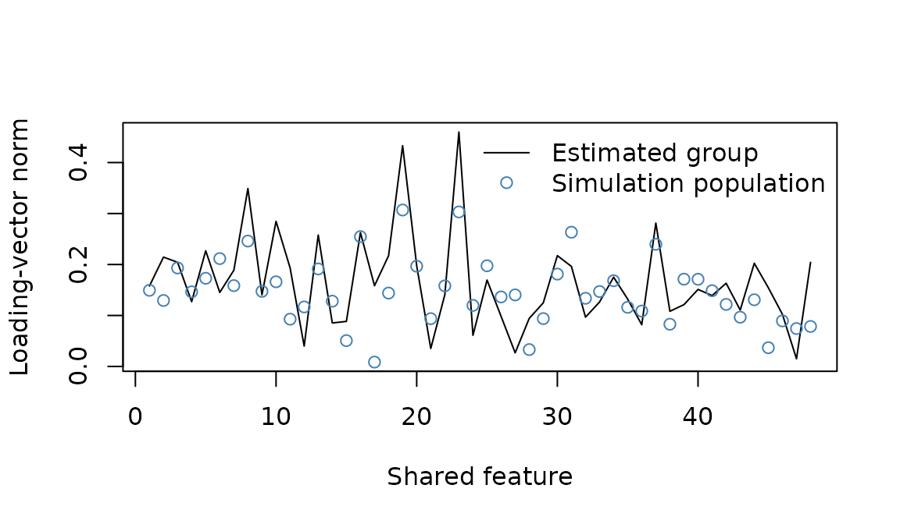

Group analysis starts with independently estimated subject loadings and their uncertainty. It needs a common meaning for both axes of every loading matrix: features must correspond spatially, and target coordinates must represent the same task quantities. Similar-looking component columns are insufficient.
pattern_group() transports each subject’s estimates
and full coefficient covariance into a reference target
basis, then estimates the group effect. An orthogonal rotation of the
reference changes component columns but preserves omnibus tests, effect
norms, and descriptive subject expression.
Create independent subject confirmations
This runnable example uses one independently fitted discovery basis for all subjects. A simulation then generates 12 subjects with Gaussian variation around the discovery loading matrix. Conditioning on that fixed discovery fit makes the population loading matrix known for this example.
ds <- gen_sample_dataset(c(4, 4, 3), 72, nlevels = 3, blocks = 3)
fit <- run_global(pattern_model(ds$dataset, ds$design, rank = 2),
refit = TRUE)$refit
reference <- pattern_basis(fit)
population <- model_patterns(fit, type = "forward")
p <- nrow(population)
feature_ids <- paste0("shared-voxel", seq_len(p))
discovery_ids <- paste0("external-discovery:", seq_len(72))The same discovery cohort may supply a basis to multiple subjects. None of its observations may appear in any subject’s confirmation data. In a real study, subject-specific discovery fits are also allowed if their raw target matrices span exactly the reference subspace. Full-rank two-component models for the same three class contrasts, for example, can differ in whitening and rotation while representing the same target subspace.
labels <- factor(rep(reference$target_ids, each = 30),
levels = reference$target_ids)
code <- model.matrix(~ labels - 1)
colnames(code) <- reference$target_ids
scores <- sweep(code, 2, reference$center, "-") %*% reference$matrix
subjects <- lapply(seq_len(12), function(s) {
subject_pattern <- population + matrix(rnorm(p * 2, sd = 0.2), p, 2)
X <- scores %*% t(subject_pattern) + matrix(rnorm(90 * p), 90, p)
pattern_confirm(
fit, X, labels,
inference = confirmation_plan("independent"),
observation_ids = paste0("subject", s, ":confirmation:", seq_len(90)),
discovery_ids = discovery_ids,
feature_ids = feature_ids,
preprocessing_id = "simulated-BOLD-original-units-v1",
subject_id = paste0("subject", s)
)
})For real run-dependent observations, choose a suitable block error model in each subject’s confirmation; see Confirming a frozen pattern model. A group model does not repair biased subject estimates or discovery/confirmation leakage.
Estimate the population mean
group <- pattern_group(subjects, reference_basis = reference, effects = "random")
group
#> pattern_group_result: 12 subjects, 48 features, 2 components
#> effects: random in the supplied reference target basis
#> subject expression is descriptive; component tests depend on the reference axes
head(group$omnibus)
#> feature_id statistic df1 df2 p p_holm
#> 1 shared-voxel1 2.618794 2 10 0.12173596 1.0000000
#> 2 shared-voxel2 6.872085 2 10 0.01324997 0.5432489
#> 3 shared-voxel3 5.288833 2 10 0.02710313 0.9215065
#> 4 shared-voxel4 2.258966 2 10 0.15505161 1.0000000
#> 5 shared-voxel5 5.386501 2 10 0.02585257 0.9053351
#> 6 shared-voxel6 1.723119 2 10 0.22750770 1.0000000The random-effects estimand is the equally weighted subject population mean. Its covariance is the sample covariance of subject coefficient vectors divided by the number of subjects. This includes both between-subject variation and subject estimation error. Adding the within-subject variance again would count sampling error twice.
The omnibus test is Hotelling’s T-squared expressed as an F statistic. With 12 subjects and two target dimensions it uses F(2, 10), regardless of how many rows each subject contributed. It is exact for iid Gaussian subject estimates with common total covariance, and approximate with heterogeneous precision or nonnormal effects. More than rank plus one subjects are required; singular covariance produces unavailable omnibus inference, not an invented zero effect.
Component t tests in $p have 11 degrees of freedom here.
$p_holm adjusts all feature-component tests together.
$omnibus$p_holm separately adjusts the omnibus family
across features. These are distinct hypothesis families.
plot(group$effect_norm, type = "l", xlab = "Shared feature",
ylab = "Loading-vector norm", ylim = range(c(group$effect_norm,
sqrt(rowSums(population^2)))))
points(sqrt(rowSums(population^2)), pch = 1, col = "steelblue")
legend("topright", c("Estimated group", "Simulation population"),
lty = c(1, NA), pch = c(NA, 1), col = c("black", "steelblue"), bty = "n")
Norms are descriptive and nonnegative; sampling noise biases small norms upward. They are not thresholded significance maps. Their magnitude also depends on the reference score scale. Only orthogonal changes preserve Euclidean norms.
Inspect heterogeneity and subject expression
head(group$heterogeneity)
#> feature_id trace Q df p
#> 1 shared-voxel1 0.07441942 99.61302 22 7.536355e-12
#> 2 shared-voxel2 0.03966968 66.67227 22 2.185097e-06
#> 3 shared-voxel3 0.07510539 98.55966 22 1.150340e-11
#> 4 shared-voxel4 0.05481605 82.18879 22 7.046230e-09
#> 5 shared-voxel5 0.07723311 101.54002 22 3.467213e-12
#> 6 shared-voxel6 0.09511295 127.08397 22 8.868059e-17
group$prediction$summary
#> response metric mean n_subjects
#> 1 class Accuracy 0.7314815 12
#> 2 class Brier 0.3762175 12
#> 3 class logloss 0.6508730 12$between_covariance is a moment estimate: sample
coefficient covariance minus average within-subject covariance,
projected onto positive-semidefinite matrices.
$heterogeneity$trace summarizes its magnitude without
choosing component axes. Truncation at zero introduces boundary bias;
this is not REML. The Q test concerns a common-effect null, treats
within-subject covariance as known, and is approximate when those
covariances are estimated. Its p values are unadjusted descriptive
diagnostics, separate from the confirmation families.
$subject_expression projects each subject onto the
normalized mean of the other subjects at each feature.
It describes agreement and sign relative to that shared pattern. It is
neither an out-of-sample group decoder nor an independent validation of
the group map. $prediction separately retains the original
frozen decoder’s held-out metrics for each subject and their unweighted
means. An unavailable subject metric makes the group mean of that metric
unavailable; missing subjects are not silently dropped.
effects = "fixed" instead uses full inverse-covariance
GLS weighting. Its normal and chi-squared tests treat estimated subject
covariance as known and are asymptotic. This estimates a common effect
among these subjects and does not support population generalization in
the presence of heterogeneity.
Make spatial correspondence explicit
By default all subjects must have the same feature-ID set; their column order may differ. If identifiers differ after an independently specified spatial correspondence, supply a mapping for each subject. Each mapping names the shared feature and gives that subject’s source feature ID.
mapping <- list(
subject1 = c(left_motor = "native_roi_17", right_motor = "native_roi_22"),
subject2 = c(left_motor = "native_roi_08", right_motor = "native_roi_31")
# ...one entry for every subject, with the same shared feature names
)
group <- pattern_group(subjects, reference, spatial_mapping = mapping)Mappings are one-to-one correspondences, possibly selecting a common subset. They do not resample images or average voxels. Interpolation or parcel averaging requires cross-feature covariance to propagate uncertainty, which confirmation objects do not store. Perform that spatial transformation before confirmation, then fit and estimate the transformed measurements in their stated units.
Matching preprocessing identifiers and nuisance column names are checked, but the caller must verify that preprocessing recipes, measurement units, target units, and nuisance meanings agree. Target sampling and omitted target effects must also permit the same conditional estimand across subjects. Unequal target subspaces are rejected: rotating them to look similar would silently change the group estimand.
saveRDS(group, "group-pattern-confirmation.rds")The saved result includes aligned subject coefficients, full mean and
between-subject covariance, basis transformations, mappings, and
provenance. It transports subject covariance one feature at a time,
avoiding a second copy of every subject covariance array. The retained
aligned estimates require features times rank times subjects storage;
mean and heterogeneity covariance require features times squared rank
storage. No feature-by-feature covariance is formed. The reference basis
ID is recomputed from its actual raw target coordinates;
source_basis_id retains the discovery basis identifier.
Joint hierarchical fitting of discovery patterns and sequential
supported-rank inference remain separate extensions.